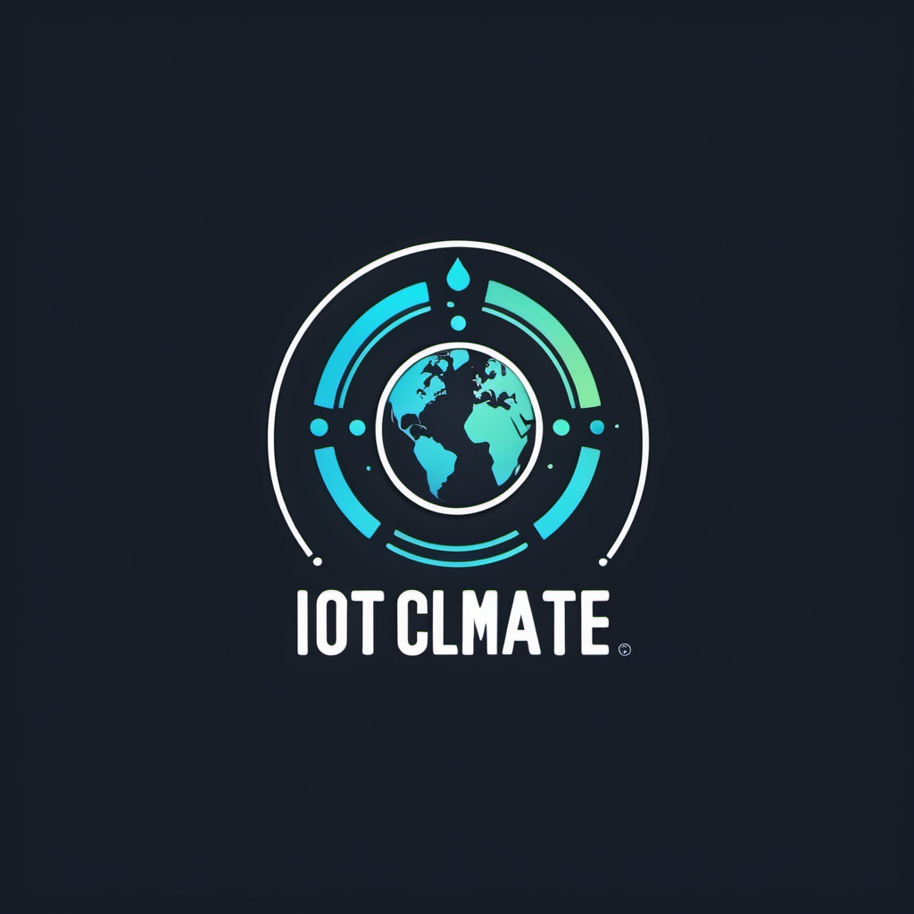
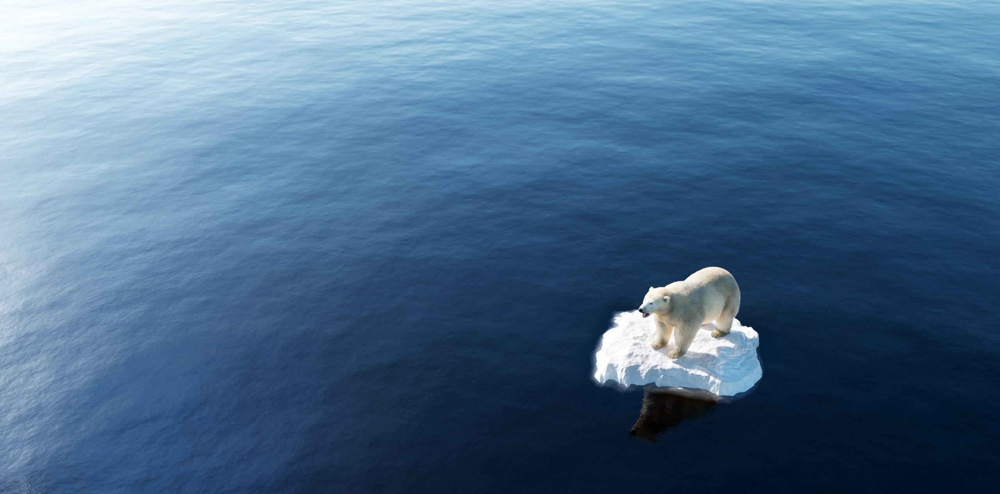

IoT4Climate
"Empowering Action, Protecting Our Planet."

"Empowering Action, Protecting Our Planet."
Drie vrienden, Emma, Sam en Maxime, richtten IoT4Climate op, een bedrijf dat technologie en innovatie inzet om het klimaat te verbeteren. Emma bracht haar expertise in milieuwetenschappen in, Sam specialiseerde zich in slimme technologieën, en Maxime combineerde zijn ondernemerschap met een passie voor duurzaamheid. Dankzij Maxime zijn kennis van webontwikkeling bouwden ze een gebruiksvriendelijke website die niet alleen hun missie uitdraagt, maar ook een platform biedt voor klanten om realtime inzicht te krijgen in hun CO₂-uitstoot en energieverbruik.
IoT4Climate ontwikkelt IoT-oplossingen die bedrijven helpen hun ecologische voetafdruk te verkleinen, met als doel een groenere en duurzamere toekomst.
Terug naar bovenKlimaatverandering verwijst naar langdurige veranderingen in de wereldwijde of regionale klimatologische patronen, vaak veroorzaakt door menselijke activiteiten zoals de verbranding van fossiele brandstoffen, ontbossing en industriële processen. Dit leidt tot een verhoogde concentratie van broeikasgassen, zoals kooldioxide (CO2) en methaan, in de atmosfeer. Deze gassen vangen warmte vast, wat de aarde opwarmt, een fenomeen dat bekendstaat als het broeikaseffect.
Een van de meest zichtbare gevolgen van klimaatverandering is de stijging van de mondiale temperatuur. Gemiddeld is de temperatuur op aarde met ongeveer 1,1 graden Celsius gestegen sinds de late 19e eeuw. Deze stijging heeft invloed op het weer, wat leidt tot extremere weersomstandigheden, zoals hevige regenval, langdurige droogtes, hittegolven en sterke stormen. Deze veranderingen verstoren ecosystemen en maken het moeilijker voor mensen om zich aan te passen.
Klimaatverandering heeft ook directe gevolgen voor de biodiversiteit. Veel diersoorten en planten kunnen zich niet snel genoeg aanpassen aan de veranderende omstandigheden, wat leidt tot verlies van biodiversiteit en zelfs uitsterving van sommige soorten. Oceanen worden zuurder door de opname van extra CO2, wat koraalriffen bedreigt en de vispopulaties die van deze ecosystemen afhankelijk zijn, in gevaar brengt. Dit heeft gevolgen voor de voedselvoorziening van mensen, vooral in kustgebieden.
Daarnaast heeft klimaatverandering verwoestende economische en sociale gevolgen. Landbouwproductie wordt beïnvloed door onvoorspelbare weersomstandigheden, waardoor voedselzekerheid in gevaar komt. Stijgende zeespiegels bedreigen laaggelegen gebieden en eilandstaten, terwijl extreme weersomstandigheden de infrastructuur beschadigen en de kosten van schadeherstel verhogen. De kwetsbaarste bevolkingsgroepen, zoals arme gemeenschappen en eilandbewoners, zijn vaak het zwaarst getroffen door de gevolgen van klimaatverandering, wat leidt tot sociale ongelijkheid en conflicten over hulpbronnen.
Terug naar bovenDoor IoT-technologieën te integreren in energienetwerken, kunnen we real-time gegevens verzamelen over energieverbruik en productie. Slimme meters en sensoren kunnen helpen bij het optimaliseren van de energievoorziening, het verbeteren van de efficiëntie en het maximaliseren van het gebruik van hernieuwbare energiebronnen.
In de landbouw kan IoT worden ingezet voor slimme irrigatie. Bodemvochtigheidssensoren en weerstations kunnen boeren helpen bij het optimaliseren van watergebruik, wat leidt tot besparing van waterbronnen en vermindering van de uitstoot van broeikasgassen.
In steden kan IoT helpen bij het verbeteren van de luchtkwaliteit en het verminderen van vervuiling. Luchtkwaliteitsensoren kunnen zorgen voor real-time monitoring, en steden kunnen snel reageren op vervuilingspieken door bijvoorbeeld verkeersstromen aan te passen of luchtzuiveringssystemen in te schakelen.
Xaverianenstraat 10, 8000 Brugge
Email: info@iot4climate.be
Tel: +32 50 10 20 30
Website: www.iot4climate.be